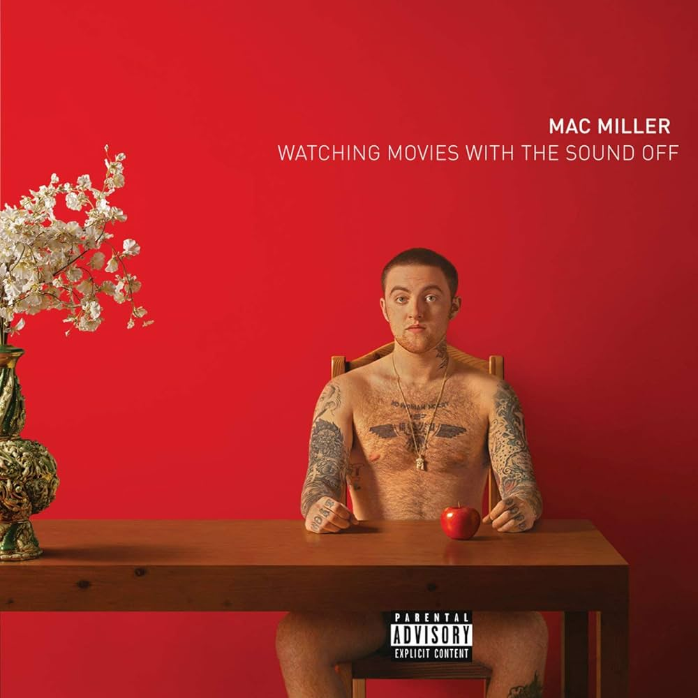
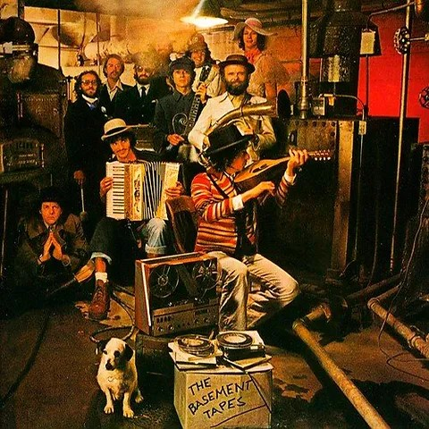
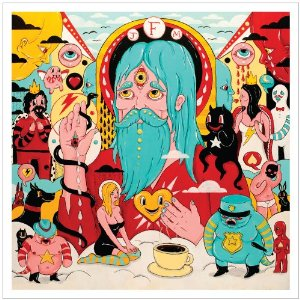
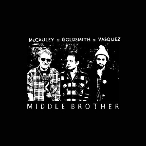
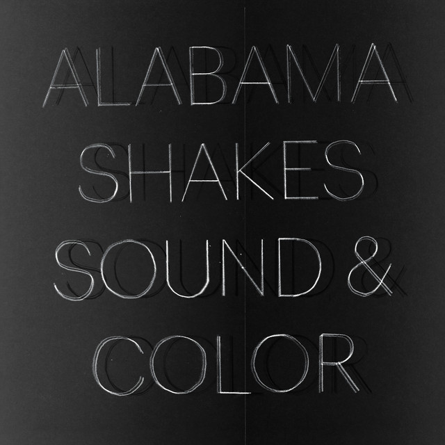
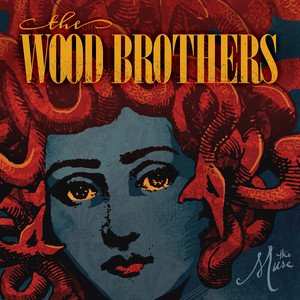
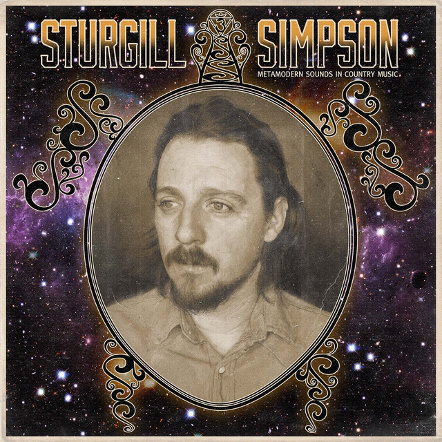

Man On The Moon II: The Legend Of Mr.Rager by Kid Cudi
Man On The Moon II is an album that was one of the first
albums that felt personal to me. Even the name of the album being what
it is matched how I felt about myself at the time. Although I had many
friends from playing baseball and going to school with, I still never
felt like anyone ever truly understood me or knew exactly who I was.
The song “All Along” seemed to be one that struck me in a way that not
many other songs had before. Its thoughtful lyrics and slow, simple
melody would be a combination that would stick with me as many of my
favorite songs since then follow the same blueprint.

Watching Movies with the Sound Off by Mac Miller
Watching Movies with the Sound Off was an album that was less
personal and more an album that changed my way of seeing music. I was
never into the music that you would usually hear playing at high
school parties but this album solidified that music was not about the
excitement or flash that you felt while listening. The album came
after Macadelic which was Mac Miller's big departure from the type of
music I am referring to so it was close to being the album on the list
but this one was the one that really stood out as the one that set me
on a different path in my musical interests. Even though I don't
listen to as much hip-hop music, I can still listen and appreciate
this album for its seriousness and its truths about life.

The Basement Tapes by Bob Dylan and The Band
The Basement Tapes is an album that has very little
significance for the actual music in the album but more about the
connection that it has to people in my life. It was an album that was
gifted to me and the rest of my family by my late older brother Kyle.
There was an 11 year gap between him and I. He was a fan of Bob Dylan
and used to sing and play guitar to Bob Dylan songs when I was very
young and he was almost out of the house. The song that stands out is
the song “Goin' to Acapulco” which was shared shortly after his
passing by some of his friends as a good song to capture his true
spirit. Life is not worth worrying about and you should just be
looking to have fun and experience the exciting side of life. For
better or worse, I believe they are correct.

Fear Fun by Father John Misty
Fear Fun is an album that transformed my musical tastes like
no other album. I found it after searching Father John Misty after
hearing his powerfully dynamic voice sampled on a track by Kid Cudi
who at the time was one of my favorite artists. Fear Fun was
unlike anything I had been listening to before that but I instantly
became a huge fan of the album and Father John Misty. It opened my
eyes to new genres of music that I had never known existed. His
philosophical lyrics fit into exactly what my mind was curious about
personally. The timing of my initiation to this type of music could
not have been better timed.

Middle Brother by Middle Brother
Middle Brother is the only single album from a folk rock
supergroup of John McCauley of Deer Tick, Taylor Goldsmith of Dawes,
and Matt Vasquez of Delta Spirit. Before finding this album I was a
fan of Deer Tick and Dawes but had heard very little of Delta Spirit.
I still listen to both Dawes and Deer Tick while I still don't know
much about Delta Spirit. This album hit me when I was just beginning
to figure life out on my own. I had made some bad decisions that had a
large impact on the trajectory of my life in good and bad ways. This
album holds songs, both originals and covers, about heartbreak,
delusion, resilience, and deep truths. When asked what kind of music I
listen to I will always reference this album as an example of what
leaves the deepest impact on me. I love every song on this one.

Sound & Color by Alabama Shakes
Sound & Color is an album that brought out a different side
of me at a time in my life when I was starting to feel the isolation
of worrying about what people thought about me. The Alabama Shakes
were the headliner for one night of the Buzz Beach Ball festival in
Kansas City. It had been a long day in the sun and the sun was going
down as they started their show. Although it may have been a drug
fueled feeling, I was not worried at all about what was going on
around me. They put on a great show and I danced all the way through
it. I think I had a mental breakthrough when instead of feeling like
people were staring at us because we were weird or strange but because
they felt like they would have a better time joining in. Something
about this moment really brought me out of a mental health decline
that I was dealing with at the time.

The Muse by The Wood Brothers
The Muse is an album that my wife and I share a love for. It
was an album that we listened to a lot while working together and when
we first started dating. It is also my favorite album from one one of
my favorite artists. They also have put on a great show the two times
I have gone to their shows. Their performances and music blend so many
styles and influences and all of it seems truly original and creative.
My favorite moment of their shows is when they bring out a single
old-timey microphone and they all get around it and play into the
single microphone. It creates a sound that is incomparable to modern
microphone techniques. This choice is purely for my love and respect
for what they do.

Metamodern Sounds in Country Music by Sturgill Simpson
Metamodern Sounds in Country Music changed my opinion on the genre of
country music. This was not the typical country album that sang about
trucks, beer, and girls. It had real thoughtful lyrics and killer
melodies. Even the opening track's name is a mention of a
philosophical thought experiment and the track talks about different
ways of seeing the world and living a better life. It felt like the
first time that I had heard country songs that sang about things that
I actually thought were worth entering the realm of art and
creativity. This marks another opening up of my musical interests and
a realization that genre is not a helpful way to categorize music and
its similarities.